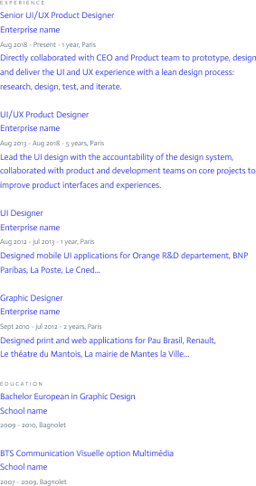

3267 Congress Ave
Austin, TX 78735
MaheshAbdelhadi@gmail.com
(512)-248-3095
Contact Details
Work References
Sandy Sloan - Head of UX Team
5200 Lamar Ave
Austin,
TX 78733
SandySloan@gmail.com
(512)-567-9880

Mahesh
Abdelhadi
UX DESIGNER
